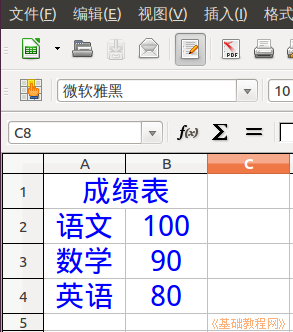

2015-2016 第一学期七年级电子表格和音视频编辑教学设计
作者：TeliuTe 来源：基础教程网
一、 返回目录 下一课
（一）教学设计
1、学习目标：
2、注意事项：绕过弯来，既不要跳也不要落，一楼过了二楼
3、教学过程：
1）教师准备学案和板书；
2）学生整队进入，开机抄黑板上笔记；
3）教师讲解板书演示操作；
4）学生打指法、日志、完成操作；
5）教师打勾记录学生指法成绩，检查日志和操作；
注：学生抄完笔记就开始打指法、日志，老师讲完后再继续完成；
操作图示：

（二）板书设计(学生笔记)、课后记
01学会calc电子表格
1.打开绿色calc表格程序
2.第一个单元格A1，下面工作表1
3.选中标题，合并居中
4.设置字体颜色，保存为第1课
第1课 学会calc电子表格
1.打开绿色calc表格程序
2.第1个单元格是A1，下面工作表1
3.拖选中标题，合并居中
4.字体颜色，二号，居中，保存为第1课/7-1
--
2016年02月26日 星期五 12:42
--
中文点出来扫一眼检查一下，工具条拖到最上面不碍事
看全半角、中英文标点，大小写锁定，检查一下
--
中文速度还是慢些，4班的差异很大
快的学生做完没有事做，开网要等期中考试以后了
--
校园网里要把金币兑换设置到农牧场里
要不金币多的没地方用也是麻烦
--
2班、1班的学生去补考去了，第一节课就旷课
看来这一届也是前程堪忧，大课间去，中午提前些都可以
--
没什么难度，就是中文指法要慢慢多讲一下
把中文的三个要点讲一下，另外工具条拖到最上面去
--
看着学生都挺疲惫的，可能是刚开学还没适应过来
家里提前就要先培养一下，免得开学了忙乱的
返回目录 下一课
本教程由86团学校TeliuTe制作|著作权所有
基础教程网：http://teliute.org/
美丽的校园……
转载和引用本站内容，请保留作者和本站链接。